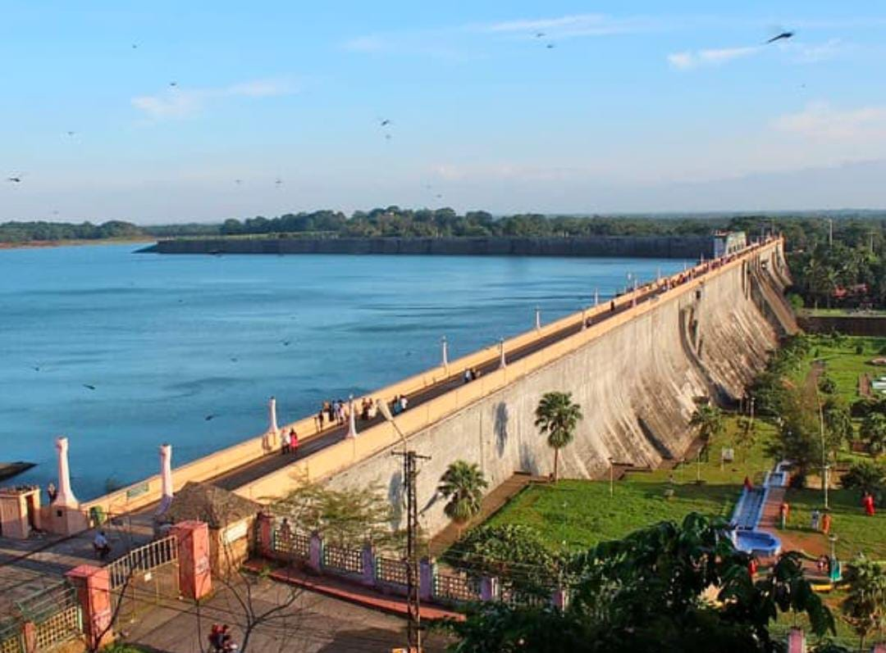
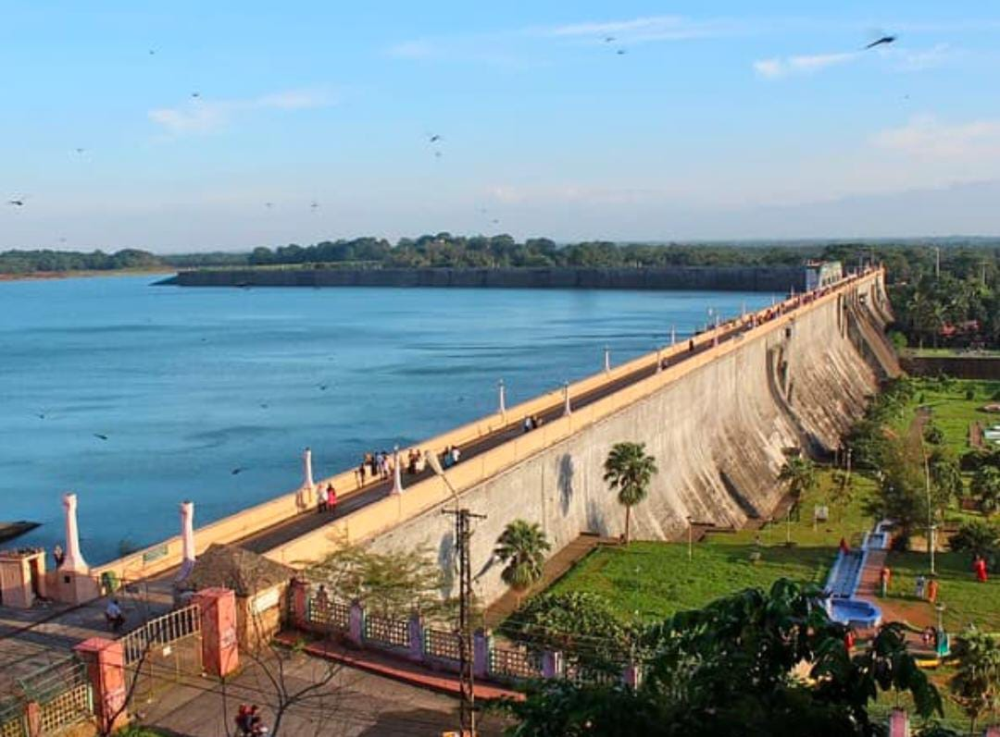
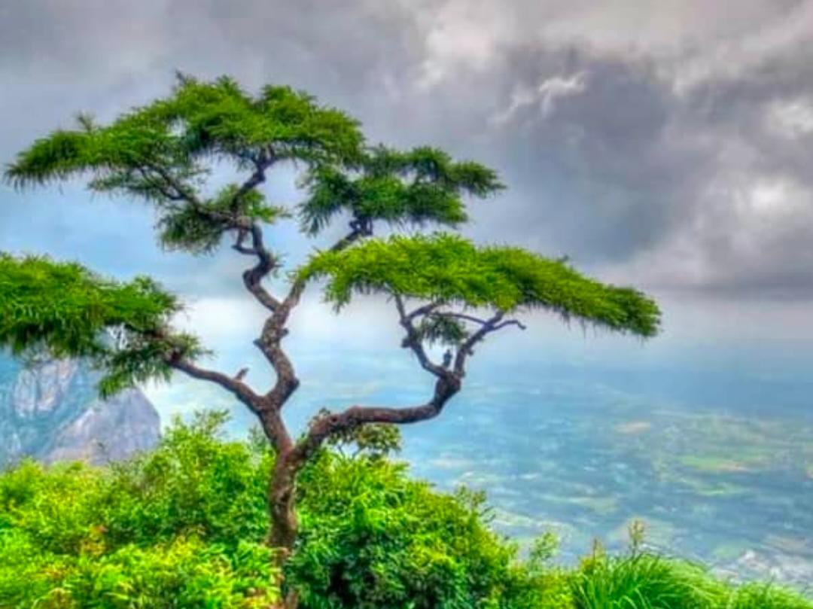
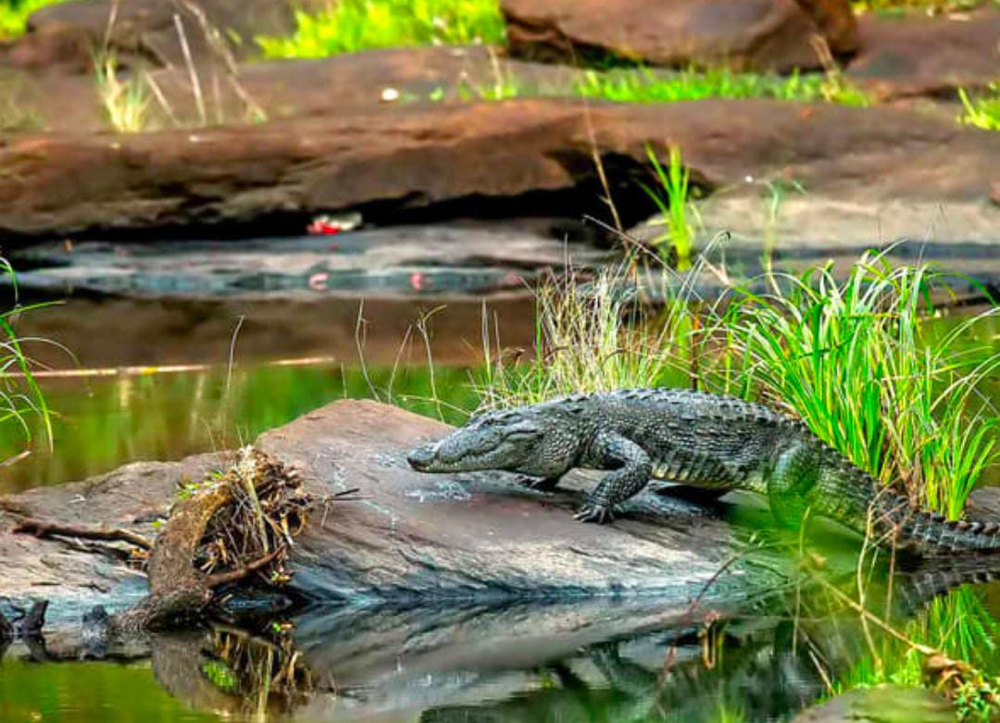

DHONI WATERFALLS

Dhoni waterfalls is a pristine piece of nature,where hills always call you back.Dhoni is a heavenly charm with misty mountains and the reserve forest is just about 12km from Palakkad town.
NELLIYAMPATHY

Nelliyampathy..the evergreen forests,orange,tea,coffee,and cardamom plantations enriched with spectacular valleys and misty mountains make Nelliyampathy the exotic location. And Nelliyampathy often called " poor man of Ooty"
PARAMBIKULAM WILDLIFE SANCTUARY

Parambikulam is theone of the premier tiger reserves of India and is endowed by nature in terms of species,habitat and ecosystem.Reptile of very high importance in Parambikulam Wildlife sanctuary.
FANTASY PARK

It is the first Amusement park to be opened in Kerala.it is situated near to Malampuzha garden